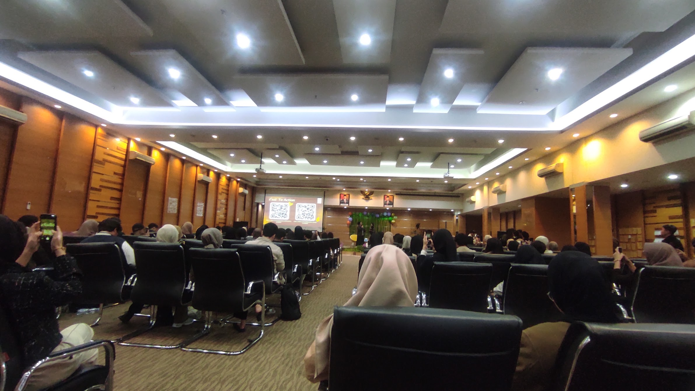

Photo caption: AIESEC Future Leader First Meeting Event.
[WRITER'S NOTE] During my 3rd and 4th semesters, I joined AIESEC in Bandung's Future Leaders program across both the Summer and Winter peak seasons, completing two consecutive programs over the course of one year. AFL is AIESEC's program built around workshops and a group project. It exposes me to global culture, volunteering, exchange, and most importantly this is where my english got polished even more since everyone is encourage to use english for every occasion (presentation, storytelling, reporting, etc).
One of the main parts of the program was the Special Track, where participants were expected to put the lessons they had learned into practice through a collaborative project. Working with a team, i helped identify a real-world issue divided by SDGs points, develop an idea to address it, and turn that idea into a practical project. This gave me the opportunity to practice not only teamwork and communication, but also project planning, decision-making, and problem-solving in a real project setting. This AFL journey is what led me into AIESEC's Global Volunteer.